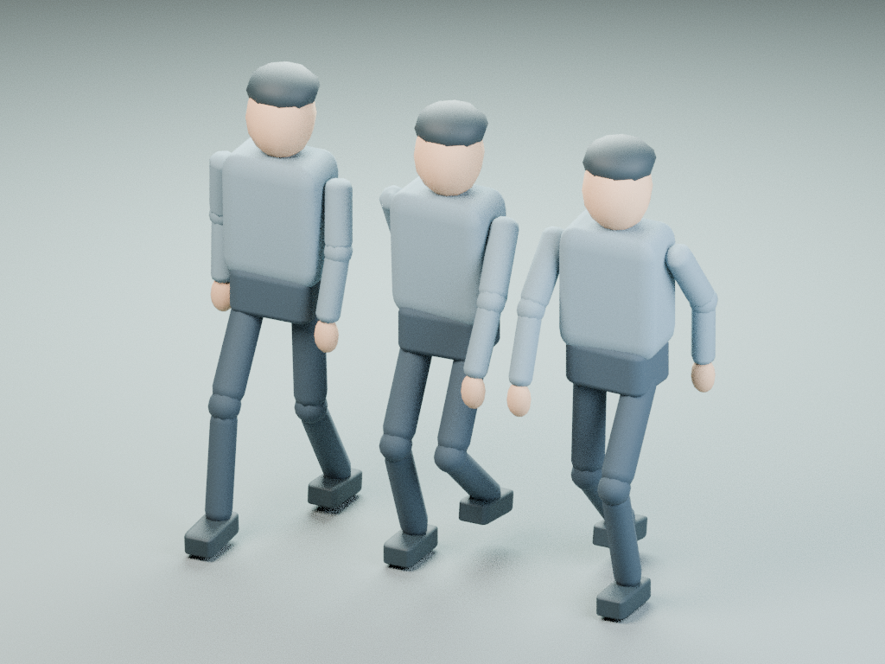
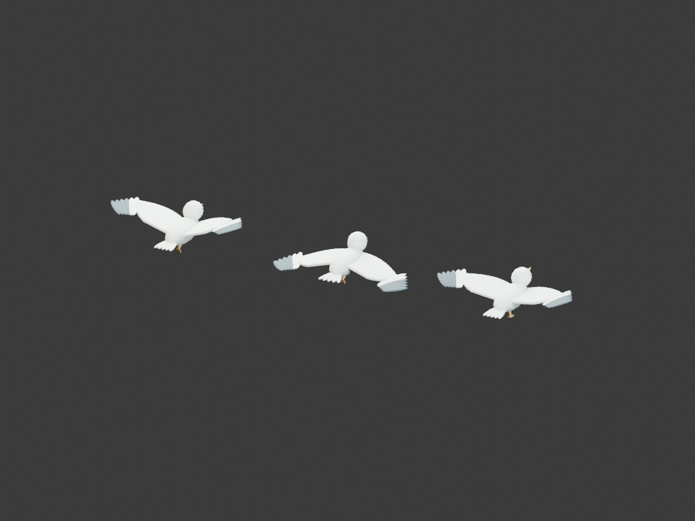
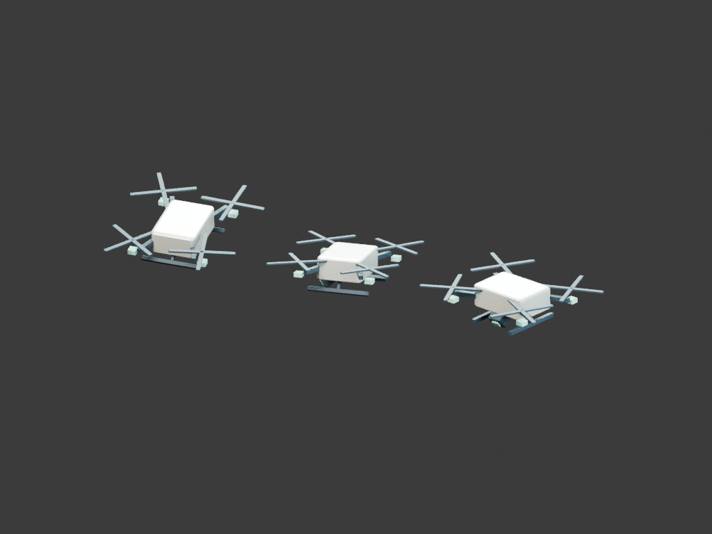

skygrip-20261111-r013。r012の10改良を引き継ぎ、手6・鳥10・救助ドローン6・街路人物8の改善を追加しました。
スマホはブラウザーで通常3Dを開始。左右の↑を交互にタップして登り、左右同時入力も可能です。中央をドラッグすると見回せます。PCのキーボード・マウス・ゲームパッド操作では画面の操作盤を自動で隠します。「操作・快適性・サウンド」→「画面のタッチ操作」で自動／常に表示／表示しないを変更できます。メニュー表示中とVRでは操作盤を隠します。
横向きがおすすめです。縦向きにも対応する寸法と、ノッチ・画面端の余白を設定しました。ネイティブアプリのインストールやオフライン動作は含みません。
| ID | 改善前 | 実装内容 | 変更箇所 |
|---|---|---|---|
| PA01 | 材質が違っても同じ握り形 | 保持材質ごとの指形状 | src/hands.ts, src/character-motion.ts, src/main.ts |
| PA02 | 片手・両手支持で同じ指の緊張 | 片手支持に応じた指の緊張 | src/hands.ts, src/character-motion.ts, src/main.ts |
| PA03 | 全関節が一つの開閉値に従う | 指先から順に離す解放動作 | src/hands.ts, src/character-motion.ts, src/main.ts |
| PA04 | 親指の対向も他の指と同じ応答 | 親指の独立した追従 | src/hands.ts, src/character-motion.ts, src/main.ts |
| PA05 | 保持時の収束が一様 | 接触直後の小さい沈みと収束 | src/hands.ts, src/character-motion.ts, src/main.ts |
| PA06 | 保持位置と手首の向きが無関係 | クラシック操作で保持位置へ手首を向ける | src/hands.ts, src/character-motion.ts, src/main.ts |
| PA07 | 胴体が羽ばたきから独立 | 羽ばたきと胴体の上下を同期 | src/birds.ts, src/character-motion.ts, src/actor-motion.ts, src/main.ts |
| PA08 | 翼の打ち下ろしと戻しがほぼ同じ周期 | 打ち下ろしと戻しの時間配分 | src/birds.ts, src/character-motion.ts, src/actor-motion.ts, src/main.ts |
| PA09 | 翼が上下するだけ | 戻し動作で翼を後ろへ畳む | src/birds.ts, src/character-motion.ts, src/actor-motion.ts, src/main.ts |
| PA10 | ワールドZ移動量をバンクに使用 | 旋回の曲率に合わせたバンク | src/birds.ts, src/character-motion.ts, src/actor-motion.ts, src/main.ts |
| PA11 | 頭が機体の傾きに完全追従 | 鳥の頭部を進路と水平へ安定 | src/birds.ts, src/character-motion.ts, src/actor-motion.ts, src/main.ts |
| PA12 | 尾羽の幅が固定 | 旋回時の尾羽の開き | src/birds.ts, src/character-motion.ts, src/actor-motion.ts, src/main.ts |
| PA13 | 脚と足がない | 鳥の足を追加し低速時に伸ばす | src/birds.ts, src/character-motion.ts, src/actor-motion.ts, src/main.ts |
| PA14 | 警告音の間も嘴が閉じたまま | 警告の鳴き声と嘴の開閉を同期 | src/birds.ts, src/character-motion.ts, src/actor-motion.ts, src/main.ts |
| PA15 | 攻撃後の帰還で速度が途切れる | 攻撃終了後を速度連続の帰還曲線へ | src/birds.ts, src/character-motion.ts, src/actor-motion.ts, src/main.ts |
| PA16 | 攻撃が一定速で開始・終了 | 鳥の突進に加減速を付ける | src/birds.ts, src/character-motion.ts, src/actor-motion.ts, src/main.ts |
| PA17 | 到着時の傾きが経路と無関係な波形 | ドローンの加速度に応じた姿勢 | src/actor-motion.ts, src/world.ts |
| PA18 | 機首の向きが固定 | 救助地点へ機首を向ける | src/actor-motion.ts, src/world.ts |
| PA19 | 全ローターの角度が一つの時計から算出 | 各ローターの差動と回転位相 | src/actor-motion.ts, src/world.ts |
| PA20 | 着地脚が常に固定 | 着地脚を到着前に展開 | src/actor-motion.ts, src/world.ts |
| PA21 | カメラの向きが固定 | ドローンのカメラをプレイヤーへ追従 | src/actor-motion.ts, src/world.ts |
| PA22 | 屋上の風と機体が無関係 | 風に応じた機体の微小な姿勢補正 | src/actor-motion.ts, src/world.ts |
| PA23 | 街路の人影が単一カプセル | 街路の人影を関節付きの人物に置換 | src/pedestrians.ts, src/world.ts |
| PA24 | 人物の脚が動かない | 歩行に合わせた股関節と膝 | src/pedestrians.ts, src/world.ts |
| PA25 | 移動に合わせた接地がない | 接地中の足滑りを抑える歩幅同期 | src/pedestrians.ts, src/world.ts |
| PA26 | 腕が動かない | 脚と逆位相の肩と肘 | src/pedestrians.ts, src/world.ts |
| PA27 | 胴と骨盤の連動がない | 歩行時の胴体と骨盤の逆ひねり | src/pedestrians.ts, src/world.ts |
| PA28 | 歩行速度・歩幅の個体差がない | 固定seedの体格と歩調の個体差 | src/pedestrians.ts, src/world.ts |
| PA29 | 通行人が静止したまま | 街路人物の立ち止まりと加減速 | src/pedestrians.ts, src/world.ts |
| PA30 | 人物の描画詳細と距離が無関係 | 距離に応じた人物の形状と更新制御 | src/pedestrians.ts, src/world.ts |
以下はゲームの実メッシュをエクスポートした静止姿勢です。BlenderのCPUスタジオ描画であり、ゲーム画面・実FPS・スマホ実操作・Quest表示の証拠ではありません。人影は街路の遠景用の造形です。



自動検査は座標・関節・状態遷移と、DOM/WebGL/音を模擬したCPU実アプリ検査です。頭部やVRコントローラーの追跡には人工的な遅延を加えていません。実機によるプロ品質の視覚受入、4060 Tiの4K FPS、スマホ/iPad/Questの実操作、実音声は未確認です。
既存セーブを読まず変更しない性能検証モード：場面を準備→10秒待つ→60秒の計測開始。2Dはメニュー/HUD、3Dは登攀です。独立した2Dゲームはありません。r012の10項目